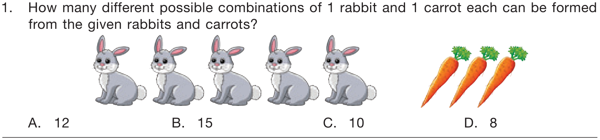
How many different possible combinations of 1 rabbit and 1 carrot each can be formed from the given rabbits and carrots?
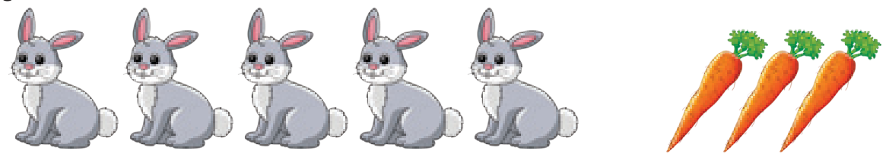
12
15
10
8
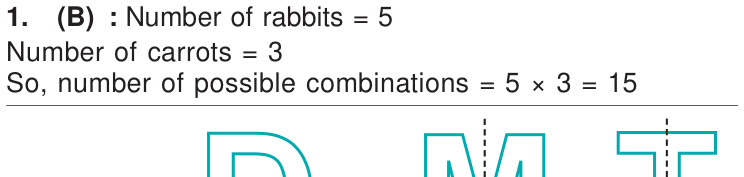
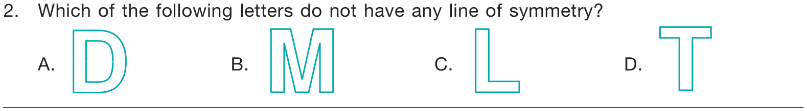
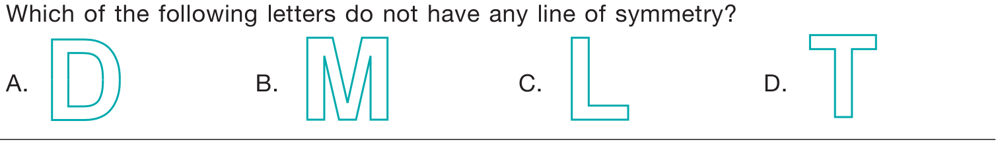
Option A
Option B
Option C
Option D
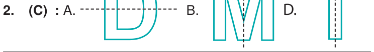
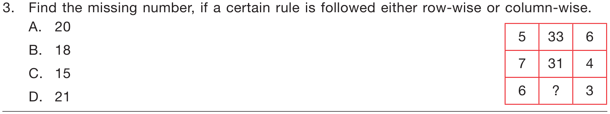
Find the missing number, if a certain rule is followed either row-wise or column-wise.
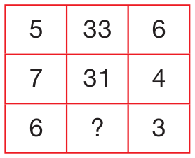
20
18
15
21
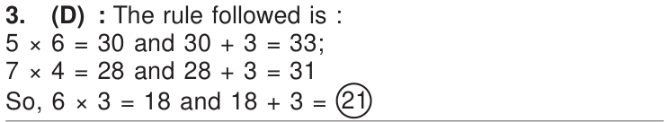
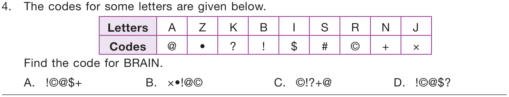
The codes for some letters are given below.
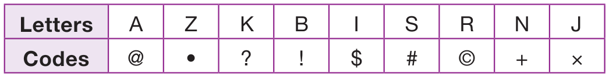
Find the code for BRAIN.
!©@$+
ו!@©
©!?+@
!©@$?
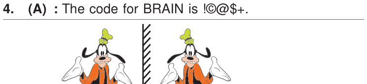
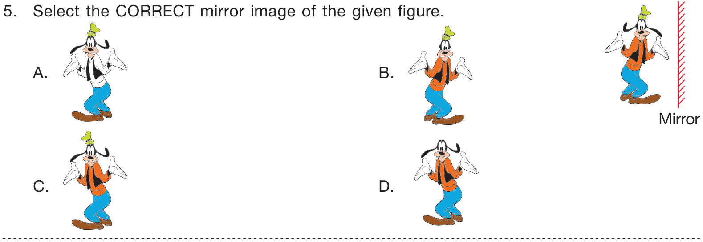
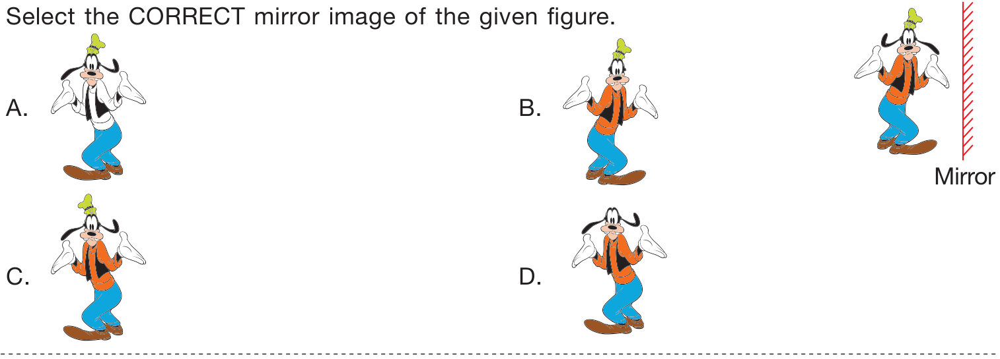
Option A
Option B
Option C
Option D
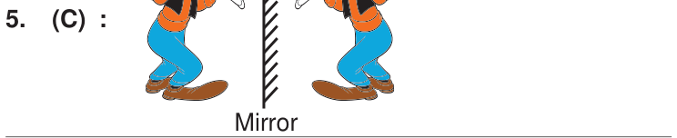
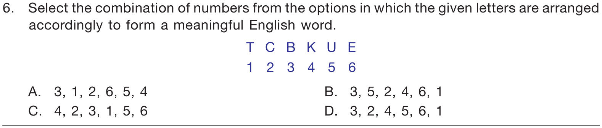
Select the combination of numbers from the options in which the given letters are arranged accordingly to form a meaningful English word.
T C B K U E
1 2 3 4 5 6
3, 1, 2, 6, 5, 4
3, 5, 2, 4, 6, 1
4, 2, 3, 1, 5, 6
3, 2, 4, 5, 6, 1
The meaningful English word formed is BUCKET, i.e., 3, 5, 2, 4, 6, 1.
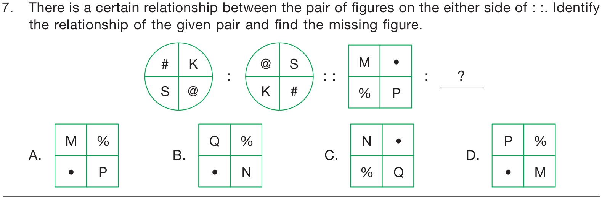
There is a certain relationship between the pair of figures on the either side of : :. Identify the relationship of the given pair and find the missing figure.
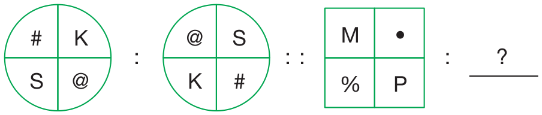
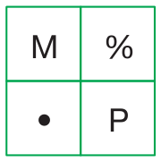
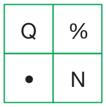
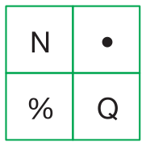
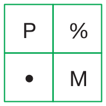
In the left pair, from first figure to second figure, the top left element interchanges its position with bottom right element and top right element interchanges its position with bottom left element.
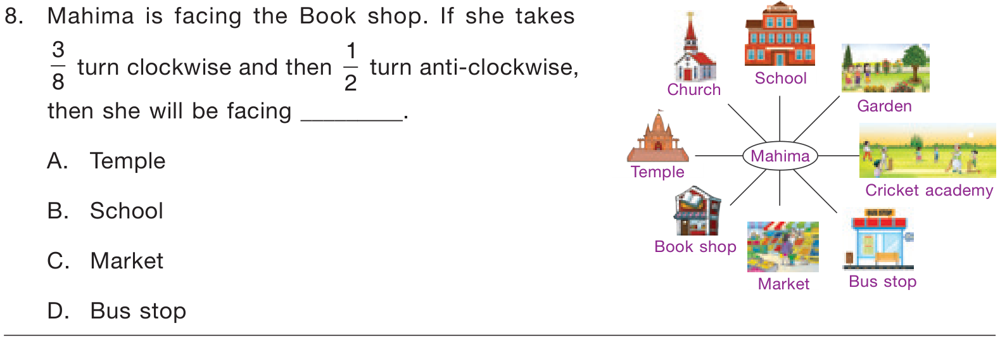
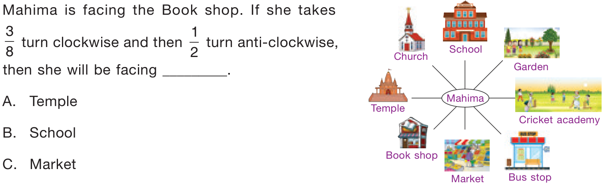
Temple
School
Market
Bus stop
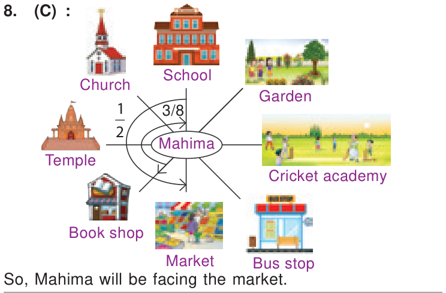
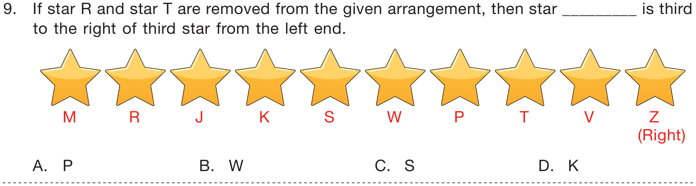
If star R and star T are removed from the given arrangement, then star _________ is third to the right of third star from the left end.
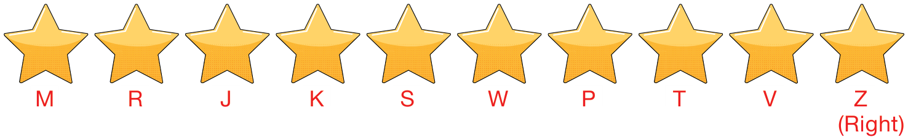
P
W
S
K
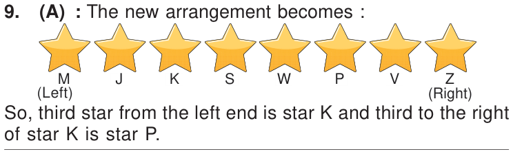
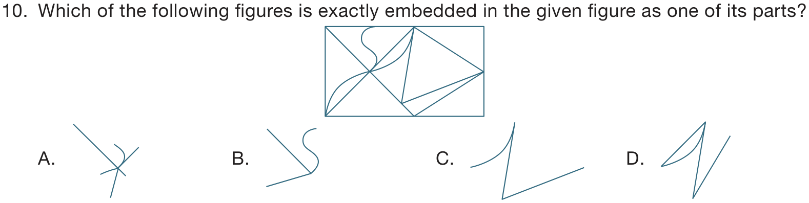
Which of the following figures is exactly embedded in the given figure as one of its parts?
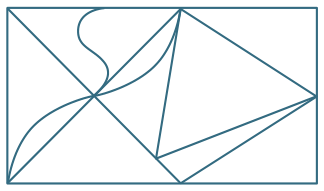
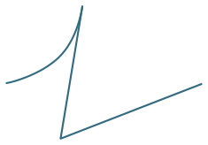
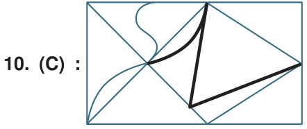
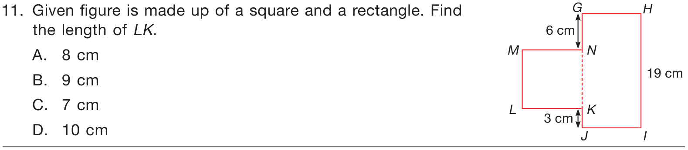
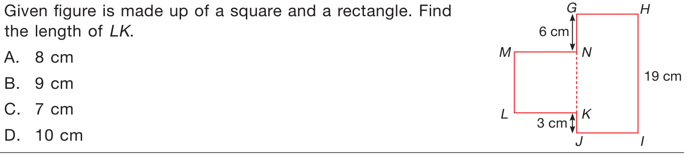
Option A
Option B
Option C
Option D
As, GHIJ is a rectangle.
\ GJ = HI = 19 cm
⇒ GN + NK + KJ = 19 cm
⇒ 6 cm + NK + 3 cm = 19 cm
⇒ NK = 19 cm – 9 cm = 10 cm
As, KLMN is a square, so LK = NK = 10 cm
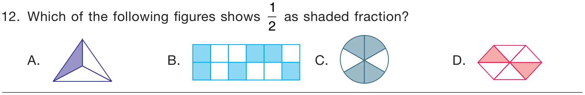
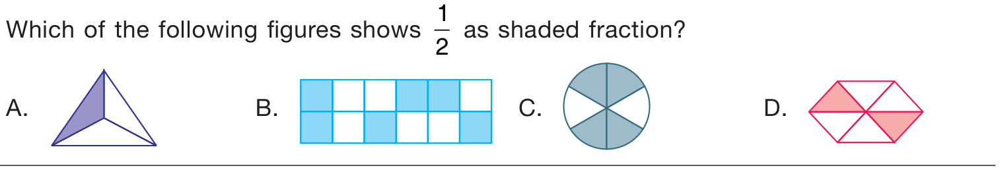
Option A
Option B
Option C
Option D
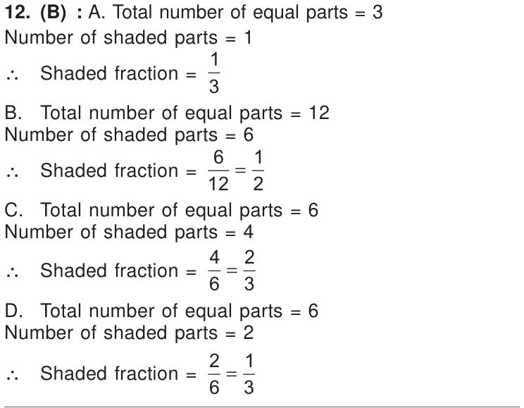
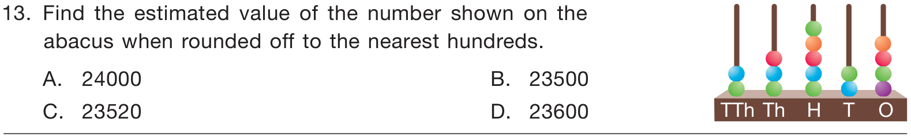
Find the estimated value of the number shown on the abacus when rounded off to the nearest hundreds.
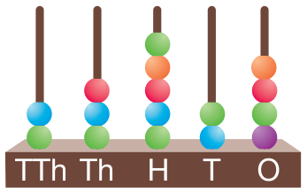
24000
23500
23520
23600
Number shown on the abacus = 23524
23524 when rounded off to the nearest hundreds becomes 23500.
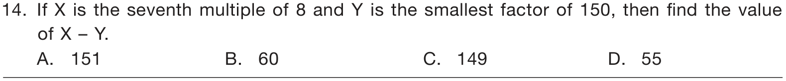
If X is the seventh multiple of 8 and Y is the smallest factor of 150, then find the value of X – Y.
151
60
149
55
X = Seventh multiple of 8 = 7 × 8 = 56 Y = Smallest factor of 150 = 1
So, X – Y = 56 – 1 = 55
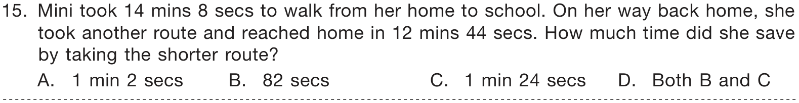
Mini took 14 mins 8 secs to walk from her home to school. On her way back home, she took another route and reached home in 12 mins 44 secs. How much time did she save by taking the shorter route?
1 min 2 secs
82 secs
1 min 24 secs
Both B and C
Time taken by Mini to reach to school from home
= 14 mins 8 secs = (14 × 60) secs + 8 secs = 840 secs + 8 secs = 848 secs
Time taken by her to reach to home from school by new route = 12 mins 44 secs
= (12 × 60) secs + 44 secs
= 720 secs + 44 secs = 764 secs
So, time saved by Mini = (848 – 764) secs
= 84 secs = 1 min 24 secs
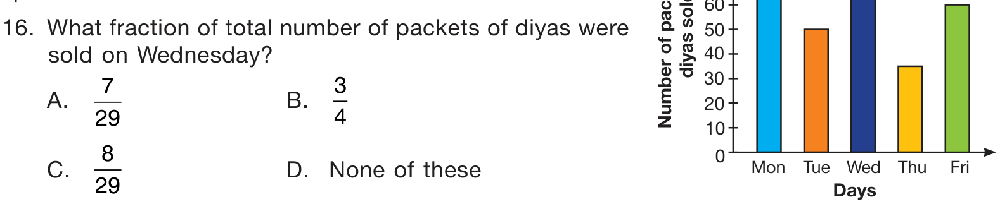
Direction (16-17) : The given bar graph shows the number of packets of diyas sold during the given five days of a week. Study the graph carefully and answer the following questions.
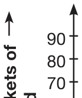
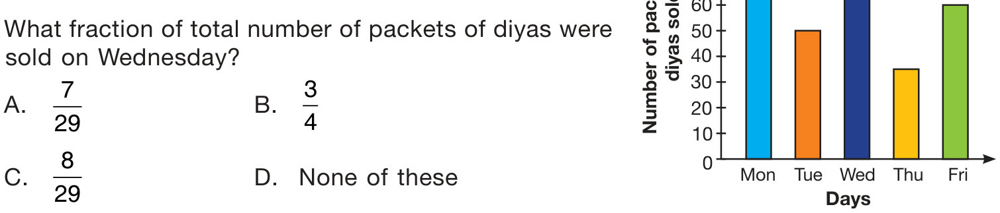
Option A
Option B
Option C
Option D
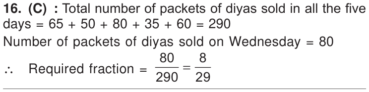
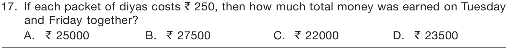
Direction (16-17) : The given bar graph shows the number of packets of diyas sold during the given five days of a week. Study the graph carefully and answer the following questions.
If each packet of diyas costs ₹ 250, then how much total money was earned on Tuesday and Friday together?
₹ 25000
₹ 27500
₹ 22000
₹ 23500
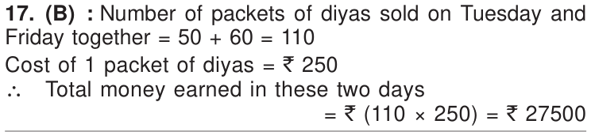
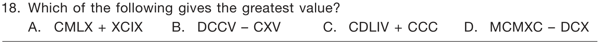
Which of the following gives the greatest value?
CMLX + XCIX
DCCV – CXV
CDLIV + CCC
MCMXC – DCX
A. CMLX + XCIX = 960 + 99 = 1059 B. DCCV – CXV = 705 – 115 = 590
C. CDLIV + CCC = 454 + 300 = 754
D. MCMXC – DCX = 1990 – 610 = 1380 So, MCMXC – DCX is greatest.
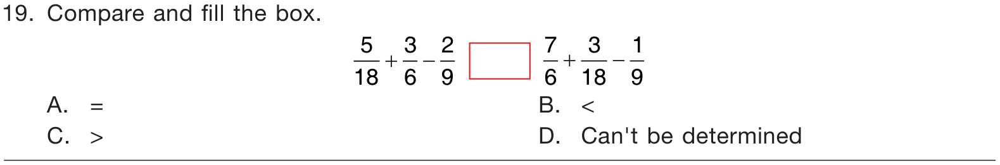
Compare and fill the box.
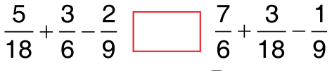
=
<
>
Can't be determined
A big milk container contains 18 L 450 mL of milk. The milk is then poured into 3 small containers of capacity 4L 200 mL each. How much quantity of milk is left in the big container?
7 L 250 mL
5 L 850 mL
6 L 150 mL
None of these
Kartik bought 515 sacks of sugar. If each sack contains 43 kg of sugar, then how much total sugar did he buy?
21500 kg
22145 kg
19250 kg
18545 kg
Number of sacks of sugar bought = 515 Quantity of sugar in 1 sack = 43 kg
\ Total quantity of sugar bought = (515 × 43) kg
= 22145 kg
Purvi travelled 45 km 750 m on Friday, 52 km 435 m on Saturday and 67 km 864 m on Sunday from her home and reached her grandparents’ home. How far is Purvi’s grandparents’ home from her home?
166 km 49 m
166 km 409 m
166 km 490 m
165 km 409 m
Total distance from Purvi’s home to her grandparents’ home = 45 km 750 m + 52 km 435 m + 67 km 864 m
= 45750 m + 52435 m + 67864 m
= 166049 m = 166 km 49 m
In one round of a number game, Ashima got the given number cards. Which of the following greatest 5-digit number can she form by using each digit at least once?
77314
77777
77431
74431
Greatest 5 - digit number formed = 77431
Virat's daily income is ₹ 750. How much total money will he earn in the month of August and September together, if he works every day?
₹ 45000
₹ 45750
₹ 42000
₹ 46500
854
816
1708
982
Atul bought 15 packets of milk which cost ₹ 645. How much will 24 such packets of milk cost?
₹ 945
₹ 1032
₹ 1120
₹ 1302
280 m
480 m
240 m
320 m
A bicycle company manufactures 48520 bicycles in a month. Out of these, 8719 bicycles were defective. How many manufactured bicycles were not defective?
39719
41615
37519
39801
Kavya bought the given washing machine, the tag on the machine is the price of machine after rounding it off to the nearest hundreds. Which of the following could be the price of the washing machine?
₹ 58652
₹ 58595
₹ 59584
From the given options, 58595 when rounded off to nearest hundreds becomes 58600.
There are 60 passengers in a bus, out of which, 25 are males, 20 are females and rest are children. What fraction of total passengers in the bus are children?
If the digits at hundreds place and units place in each of the following numbers are interchanged, then find the Roman numeral for the new numbers formed.
(p) 3518 (q) 2917
(p) (q)
MMMDCCCXV MMDCCXIX
MMMDXVIII MMCMVII
MMMDCCXIV MCMLXIX
MMDCCCXV MCMXLIV
(p) New number formed = 3815 = 3000 + 800 + 10 + 5 = MMMDCCCXV
(q) New number formed = 2719
= 2000 + 700 + 10 + 9 = MMDCCXIX
Read the given statements carefully and state T for true and F for false.
(i) The largest factor of a number is always 1.
(ii) There are 6 common multiples of 5 and 15 that lie between 1 and 100.
(iii) The HCF of 40 and 200 is 20.
(i) (ii) (iii)
T T F
T F T
F F T
F T F
(i) False; The largest factor of any number is the number itself.
(ii) True; Multiples of 5 that lies between 1 and 100 are : 5, 10, 15, 20, 25, 30, 35, 40, 45, 50, 55, 60, 65, 70, 75, 80, 85, 90 and 95.
Multiples of 15 lies between 1 and 100 are : 15, 30, 45, 60, 75 and 90.
\ Common multiples of 5 and 15 are : 15, 30, 45, 60, 75 and 90 i.e., 6 in number.
(iii) False; Factors of 40 are : 1, 2, 4, 5, 8, 10, 20 and 40. Factor of 200 are : 1, 2, 4, 5, 8, 10, 20, 25, 40, 50, 100 and 200.
\ Common factors of 40 and 200 are : 1, 2, 4, 5, 8, 10, 20 and 40
So, HCF of 40 and 200 = 40
₹ 150000
₹ 125000
₹ 150000
₹ 135000
Option A
Option B
Option C
Option D